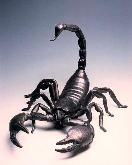
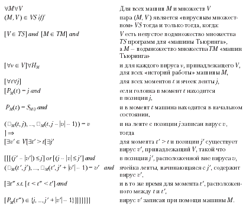
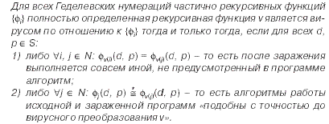
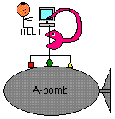

| Занимательная вирусология. Часть 7 |
|---|
[ На обложку "Занимательной вирусологии" ]
Неожиданно "Занимательная вирусология" получила продолжение - перед вами 7-ой выпуск. Хотя за прошедшие несколько лет тема компьютерных вирусов (имено саморазмножающихся вирусов, а не троянов и прочей малвари) стала менее популярна в массах, да и ярких событий, связанных с этой разновидностью "козявок", с каждым годом все меньше и меньше... Но они есть! И именно им посвящен этот старинный и странный не то альманах, не то дыбр.
|  |
Заодно загляните сюда:
|
| 1. На языке математики |
|---|
В ообще, вирус от дюбой другой разновидности программ можно отличить, воспользовавшись формальным определением, записанным на языке математики. Эх, если бы журналюги и копирайтеры знали чуть-чуть больше четырех правил арифметики... Короче, дальше пойдет текст для тех, кто понимает. J
Первое строгое определение дал Фред Коэн в своей диссертации и статье "Вычислительные аспекты компьютерных вирусов". Определение было записано в терминах, описывающих работу абстрактной машины Тьюринга, и выглядело примерно вот так.

|
 |
Не понятно? Ну, упрощенно говоря, вирусами считаются все такие программы, которые умеют перетаскивать себя в другое место ленты, на которой записаны команды для машины Тьюринга и результаты ее работы. Коэн не только дал определение, но и написал для машины Тьюринга несколько различных вирусов, в том числе и полиморфный. А еще Коэн строго доказал, что некая программа для машина Тьюринга, умевшая бы отличать вирус от не-вируса, - не может существовать. Ее написать - невозможно. (Имеется в виду не поиск конкретного типа вируса, а постановка правильного "диагноза" любой произвольной программе).
Были и другие определения. Например, знаменитый компьютерный математик Лен Адлеман придумал определение, описываемое в нотации рекурсивных функций.

|
 |
Опять не понятно?J Ну, речь идет об алгоритмах, которые умеют воздействовать на другие алгоритмы таким образом, что модифицированные алгоритмы сами приобретают свойство воздействовать на других. Это определение несколько шире Коэновского, оно, в частности, кроме вирусов описывает еще и троянские программы, и позволяет отличать их друг от друга. Да, ну и на закуску Адлеман так же доказал, что сложность задачи, позволяющей отличать вирус от не-вируса, эквивалентна поиску в счетном, но бесконечном множестве. В общем, эта задача бесконечно сложна.
Есть ли еще определения? Да, конечно, их не менее десятка. Они используют различную математическую нотацию, позволяют по-разному классифицировать вирусы, делать различные выводы в отношении их свойств. Изучайте математику, тренируйте английский, читайте первоисточники, например, вот, вот и вот. Впрочем, имеется и литература на русском языке, в которой эти определения упрощены и разжеваны до такого состояния, что их может понять любой первокурсник. В общем, "любите книгу, источник знаний!" (с) J
| 2. Моя книжка про вирусы |
|---|
К ороче говоря, собирался я, собирался, и наконец собрался. Сбылась таки мечта идиота. Вышла у меня у издательстве "ДМК-Пресс" толстенькая такая книжечка на 656 страничек - и вся про вирусы. И про ДОС-овские, и про Виндосовские, и про Юниксовские, и про телефонные. И про то, как их строго определить на языке математики. И про то, как они устроены. И про то, как они размножаются. И про то, как их детектировать. И про много-многое-многое другое. И с многочисленными примерами программного кода.
Называется она "Компьютерные вирусы и антивирусы: взгляд программиста". Подробности - здесь, оглавление - здесь.
| 3. Пара слов про индюка |
|---|
Р омантическая эпоха в компьютерной вирусологии давным-давно миновала. Вы до сих пор считаете, что вирусы и прочие вредоносные программы пишут студенты-хулиганы, которые ненавидят род человеческий? Это вы обчитались книжек Касперского и Безрукова 25-летней давности. Или вы думаете, что вирусы пишет сам Касперский в сырой и смрадной тьме своих пещерных лабораторий? Это вы грибов обожрались и прочих разных "веществ". Вот уже много лет (примерно, с 2004-2005 гг.) малварью занимаются исключительно коллективы профессионалов, причем делается это на индустриальной основе - т.е. путем конвейерного производства, с применением разделения труда и средств автоматизации.
Но есть, есть, попадаются таки ростки свежей вирусной мысли! Да еще какие!
Итак, весна-лето 2009 года. Изредка (преимущественно на форумах программистов) стали появляться сообщения о вылете некоторых программ с сообщением "Runtime error 3". Так же некоторые програмисты, использовавшие компиляторы Borland Delphi, обнаружили в своих программах посторонний машинный код... но проигнорировали происшествие. Ведь антивирусы дружно молчали, да и месторасположние постороннего кода было очень нехарактерно для зараженных вирусом программ - похоже, код не прикрепрялся к программам, а был встроен в них компилятором/компоновщиком Delphi. Гром грянул только в августе 2009, когда Gun Smoker, наткнувшись на проблему, начал ее дотошное изучение и наткнулся на...
Короче говоря, это был все-таки вирус, его назвали Induc, который заражал только программы, создаваемые в среде Delphi. Точнее, он внедрял свой исходный текст в системные библиотеки, используемые Delphi для генерации кода и, соответственно, вместе с этит библиотеками попадал внутрь компилирумых программ. В результате, он оказывался внутри многих популярных продуктов: компьютерных игр, AIMP, QIP, Total Commander и пр., причем первые случаи заражения случились еще в конце 1998 г.
Итак, вирус ничего не портил, не совершал никаких дурацких шуток, размножался исключительно редко и только на тех компьютерах, где установлена среда программирования Delphi и распространялся по миру внутри легальных программ. Чем не образец чистого, как слеза, вирусописательства ради самого идеи, а не ради выгоды?!
P.S. Более поздние версии вируса не так безобидны. Походу, стремление если не к наживе, то разрушению - неистребимо. :(
| Ни себе фига червячок |
|---|
А это история из лета 2010 года. Попался как-то в руки ребят из белорусской команды Virus BlockAda очередной червячок из серии Autorun. Это самый простой и очень многочисленный тип файловых червяков: пишутся куда-нибудь на флэшку (например, в каталог RECYCLED), в корень кладут файл AUTORUN.INF, примерно такой:
[autorun]
open=RECYCLED\Virus.exe
и, запустившись во время засовывания флэшки в USB-дырку, заражают другие флэшки, воруют пароли к почтовому ящику, рассылают спам от вашего имени... да много чего делают. Многие тыщи их. Так вот этот, один из тыщи, - его назвали Stuxnet - не делал ничего, кроме размножения. Правда, судя по размеру спящего кода, что-то он, конечно, делал, но вот разбудить его никак не удавалось. Кстати, кроме как через AUTORUN.INF, червяк умел стартовать через .LNK-ярлычки на флешке - на тот момент это было формальной новинкой и, не исключено, что червяк как раз и был создан для демонстации инноваций, но...
; Уязвимость CVE-2010-2568
...
7D638710 xor esi, esi
7D638712 inc esi
7D638713 push esi
7D638714 push esi
7D638715 push esi
7D638716 push ebx
7D638717 call AppHelp.ApphelpCheckExe ; Там надо спровоцировать ошибку
7D63871D test eax, eax
7D63871F jnz short 7D638729
7D638721 and dword ptr [ebp-220], eax
7D638727 jmp short 7D638736
7D638729 push ebx
7D63872A call Kerne32.LoadLibraryW ; Тогда загрузится посторонняя DLL
7D638730 mov dword ptr [ebp-220], eax
...
Разгадка пришла очень не сразу. Оказалось, что червяк просыпался только на компьютерах, где установлена WinCC - система мониторинга и управления технологическими процессами (так называемая SCADA-система) фирмы Siemens, причем одной-единственной версии. SCADA от Siemens стоит много где - и на электростанциях, и на аэродромах, и на вокзалах, и на промышленных предприятиях, но вот эта "одна-единственная" версия только в одном месте - на предприятиях, принимающих участие в ядерном проекте Ирана. Червяк умел перехватывать и искажать трафик между рабочей станцией, с которой оператор следит за процессами и посылает команды, и контроллерами (мини-компьютерами), которые непосредственно стоят на технологических установках. То есть, в случае успеха диверсии, оператор ядерной станции не имел бы достоверной картины о происходящем и выдавал бы неадекватные команды. (Если конкретно, то атаке подверглась бы система управления центрифугами обогащения ядерного топлива). 
Поднялся кипиш. Одни кричали, что Stuxnet создан в ЦРУ, другие, что в Моссад. Иранцы остановили свои фабрики и принялись вычищать червяка. Появились слухи, что червяк все-таки сработал, и в Иране уже все взорвалось и разнесло халабуду вдребезги и напополам.
Короче, правды никто не знает до сих пор. Хотя, тщательно изучая обстоятельства инцидента, вирусологи нашли множество других червячков и троянчиков, раньше тоже считавшихся безобидными, которые по внутреннему устройству очень похожи на червяка-диверсанта, и потихоньку, живут на компьютерах правительств, секретных лабораторий, стратегических корпораций разных стран - причем поселились там довольно давно, года на два раньше, чем появился Stuxnet. Они воруют документы и чертежи, умеют перехватывать нажатия клавиш, изображения с видеокамер и речь через микрофон, способны генерировать коллизии криптогроафических хешей и т.п. Уровень информированности, инженерной и математической подготовки авторов этой заразы очень высок.
З.Ы. Вы все еще верите, что вирусы пишут "гениальные хакеры" с 4 классами образования?
| Болеют ли гриппом пингвины? |
|---|
Терпеть ненавижу админов. :) Раньше только журналюг, теперь еще и админов. Не всех, конечно. Но некоторых.
В основном тех, кто мечтает получать корочки нахаляву заочное образование. Зачем оно им нужно?
Где какую кнопку тыцнуть, они и так знают в 100 раз лучше любого профессора. Может, им просто удовольствие доставляет раз в год заглянуть на установочные лекции и,
слушая вполуха, скучающим тоном этого самого профессора регулярно сажать в лужу:
- Хе-хе. Шифр ГОСТ 280147-89 давно взломан, его только ленивые не читают.
- Американский ФСБ/ЦРУ-шный кластер взламывает брутфорсом любые ключи/пароли за несколько часов.
- Дык, все знают, что Касперский самый тормозной антивирус в мире.
- Общеизвестно, что сам Касперский эти вирусы и пишет, с-скотина.
- В Линуксе вирусов не было, нет и не будет.
Так вот, к вопросу о вирусах в Линуксе. Вот пара скриншотиков. На одном - вирусная коллекция herm1t-a, в ней 93 штуки. На другом - описания Linux-вирусов из энциклопедии Касперского, тоже несколько десятков описаний.
Любой желающий может скачать вирусы и поэкспериментировать: они, действительно, заражают другие программы и те сами становятся заразными. Среди них есть "студенческие", которые работают только в текущем каталоге, а есть и рекурсивно сканирующие /bin. Попадаются search-и, но есть и резидентники, которые, заразив mc в дальнейшем зарязят и любые другие elf-ы, которые при его помощи будут запущены. Встречаются не только и не столько примитивные оверврайтеры и компаньоны, сколько сложные конструкции, создающие и раздвигающие секции эльфа.
Почему же никто типичный юзер или даже админ про эти вирусы никогда ничего не слышал?
Ну, во первых, в истории юниксов не было эпохи таскания
digger-ов и doom-ов с компьютера на компьютер при помощи дискеток, так что сочинение вирусов для этих систем никогда не казалось интересным для типичного
вирусописателя. Во-вторых, юниксов в природе очень много, даже если речь идет о дистрах Линуксов,
и все они очень-очень разные, так что сочинить универсальный вирус практически невозможно. (Были попытки, хе-хе).
Наконец, жесткие настройки безопасности, по умолчанию не пускают не только в root,
но даже в соседний каталог. Вот почему ВИРУСОВ ДЛЯ ЛИНУКСА МНОГО, но
их массовые эпидемии практически невозможны. Ну разве что, весь мир сойдет с ума и вручную при помощи
chmod
поставит для всей системы "rwxrwxrwx". :)
На это месте наглый админ начинает вопить: это, мол, "не настоящие" вирусы! Мол, "настоящие", это которые приходят по сети и все ломают-воруют. (Ей-ей, за такую дикую глухомань убил бы - и как drmad, и как доцент). Но и тут наивный админ бывает ужасно удивлен, "внезапно" обнаружив, что завирусованный вдоль и поперек Андроид - это тоже Linux. Да-да, самый обыкновенный Linux, только не все умеют это увидеть.
Ну что, товарищ админ, вы уже пускаете пузыри? Хе-хе, "самообразования" под пивко на крылечке в кругу друзей-ламеров не всегда хватает, верно? :)
P.S. А про "взломанный ГОСТ" и кластер, легко перебирающий "любые ключи" - мы отдельно пообщаемся. Готовь вазелинчик, наивный админчик. :)
| К воспросу о зомби-апокалипсисе |
|---|
Вопрос на самом деле очень простой: как быстро кусачие Z0mbIE зомби зохавают моск захватят Землю,
не оcтавив на ней ни одного живого человека? Вот типичный ответ:
Роберт Смит? (Robert Smith? — он пишет свое имя с вопросительным знаком на конце) из
Университета Оттавы (Канада), который занимается математическим моделированием
распространения таких заболеваний, как ВИЧ, малярия, вирус Западного Нила и других,
вместе со своими студентами разработал модель захвата человечества "живыми мертвецами".
...Выведенная Смитом формула, которая описывает зомби-апокалипсис, выглядит так:
(bN)(S/N)Z = bSZ,
где N — количество человек в популяции, S — доля восприимчивых к вирусу людей, Z —
количество зомби и b — инфицирующая способность зомби.
Забавная была бы шутка... если бы ее не процитировали сотни новостных сайтов, причем на полном серьезе. Почему шутка? Да потому что математическим моделированием размножения людей на Земле и гриппа в носу в XIX веке занимались Мальтус и Фергюльст. В начале XX века - Кермак с Маккендриком и Лоттки с Вольтеррой. Множество книжек сочинено, например вот и вот. В приложении к компьютерным вирусам в 1994 году эти модели впервые применил Кепхарт. А уж после эпидемий червя Coderd II в 2001 году и статьи Н. Уивера количество работ на эту тему стало исчисляться тысячами. Даже лично я поучаствовал. :) Короче, тема изучена, истоптана и заплевана вдоль и поперек. Везде затейливые графики и многоэтажные формулы. И вдруг...
И вдруг "(bN)(S/N)Z = bSZ" - формула, в которой после раскрытия всех скобок любой пятиклассник обнаружит тождество "bSZ=bSZ". Научное, хе-хе, открытие, хе-хе.
В общем, получилось неплохое натурное моделирование распространения заведомо идиотского текста по мозгам (если они у них есть) журналистов и копирайтеров. Браво, гн. Смит! :)
Кстати, оригинал я тоже нашел и прочитал. Конечно же, в нем кроме этой формулы нашлось еще кое-что, чего журналюги ниасилили, да и не могли. Впрочем, с точки зрения компьютерной вирусологии почти ничего нового. Опять вариации на тему хорошо изученных SI- и SIR-моделей плюс деццкая прога на бейсике. Формальная новинка - исследование влияния сброса Пентагоновской военщиной ядреной бонбы на заполненный упырями штат или дистрикт. К сожалению, против компьютерных вирусов такой бонбы не существует, так что эта новинка актуальна только в контексте человеческих и звериных эпидемий. Да и журналюги до этого места просто не дочитали, убоявшись окончательного иссушения своих микроскопических мозгов.
P.S. Кстати, если кто-то не верит. Простая прога симуляции темной комнаты, наполненной стохастично перемещающимися (в случайном направлении на случайное расстояние) людями и зомбями, сочиняется за один вечер. Вот, пожалуйста. Это я лет 6-7 назад развлекался, задолго до Смита.
Впрочем, как и ожидалось, получились все та же SI-модель и логистическая кривая Фергюльста.
| Арифметика брутфорса |
|---|
Как-то на лекции мелком по доске посчитал, не поверил своим глазам. Теперь, в спокойной обстановке пересчитываю. Итак...
0. Речь идет именно о брутфорсе - т.е. тупом переборе вариантов в реальном времени, а не о, например, "радужных таблицах". Причем о ситуации, когда искомый ключ/пароль всегда оказывается последним из N. Ну да, теоретически можно угадать и с 1-ой попытки, а в среднем требуется N/2 попыток. Но настоящие мужики брутфорсят до последнего. :)
1. Пусть одно арифметико-логическое устройство (процессор, ядро прецессора, etc.) перебирает 100000000 (сто миллионов) ключей/паролей в секунду. На самом деле, это количество должно быть на несколько порядков меньше, ведь кроме генерации строкового пароля или многобитового числа надо еще проверить его на правильность, т.е. например, 1000 раз посчитать MD5 от MD5. (Кстати, многие админы почему-то считают MD5 "шифром". Что с них взять, с тундры неумытой.) Но мы всегда и везде будем округлять в большую сторону. Итак, пусть 100000000 ~ 228 переборов в секунду.
2. На момент написания этих строк самый крутой суперкомпьютер в мире RoadRunner (США) содержит 129000 процессоров, он способен делать 12900000000000 ~ 243 подборов в сек.
3. В году 31 536 000 сек ~ 225 сек., тогда этот кластер подберет 243+25 ~ 267 штук в год. (Тут можно и остановиться, это более или менее реалистично с точки зрения подбора наших паролей/ключей, но мы пойдем дальше).
4. В мире 7 миллиардов людей ~ 233 и пусть такой вот кластер лежит в кармане/стоит в нужнике у каждого жителя Земли, включая негритянских младенцев и китайских пенсионеров. Тогда все они за год переберут 233+67= 2100 ключей/паролей.
5. Для брутфорса 128-битового ключа AES или 256-битового ключа ГОСТ 28147-89 пока маловато. Но у нас в запасе закон Мура: вычислительная мощность удваивается каждые 1.5 года. То есть, каждые 1.5 года брутфорсеры отыгрывают 1 бит. Значит, AES будет побежден только через 44 года, а ГОСТ-89... впрочем, считайте сами, мне лениво. :)
З.Ы. Хотите более реалистичных цифр? На самом деле, все кластеры и суперкомпьютеры мира довольно немногочисленны и в сумме имеют всего не больше 10-20 миллионов процессоров/ядер. Основную вычислительную мощность мира составляют компьютеры рядовых юзеров, которые можно объединить в единую сеть при помощи какой-нибудь GRID или заразив ботнетными червяками. И очень вряд ли их больше 1 млрд ~ 230. Итого 228+25+30 = 283. Хе-хе, 80-битный Скипджек одиноко и грустно сосет, так ему и надо, остальные весело пруццо. :)
З.З.Ы. Теперь понятно, почему ограничение на свободную (не требующую официального лицензирования) криптографию всего 40 бит?
| ... To be continued ... |
|---|